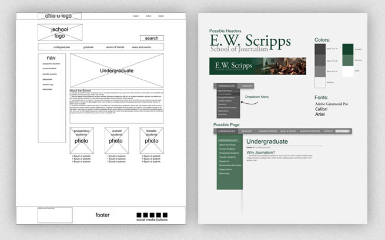

After looking at the current Scripps JSchool website, I decided to redesign it for a class project. As my first step into web design and development, I went through each phase of the design and development process.
I first created a redesign brief by comparing the current site to competitor's sites, creating test case scenarios with different users, and analyzing the structure and flow of higher education journalism sites.
Next, I created a wireframes for the individual pages and a moodboard with the colors and styles I believed would best suit a university journalism school site and went on to create mockups for four pages that were to be implemented.
Lastly, I implemented the mockups through HTML and CSS to create four usable demo pages. This was the first time I got my hands dirty with HTML and CSS. I had some prior knowledge, but learning the development cycle for a basic static website was a valuable learning experience.